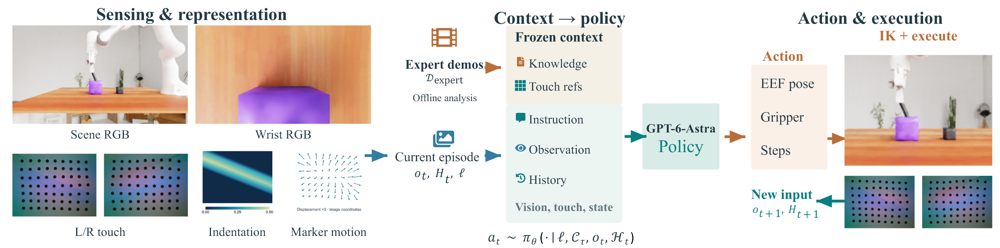
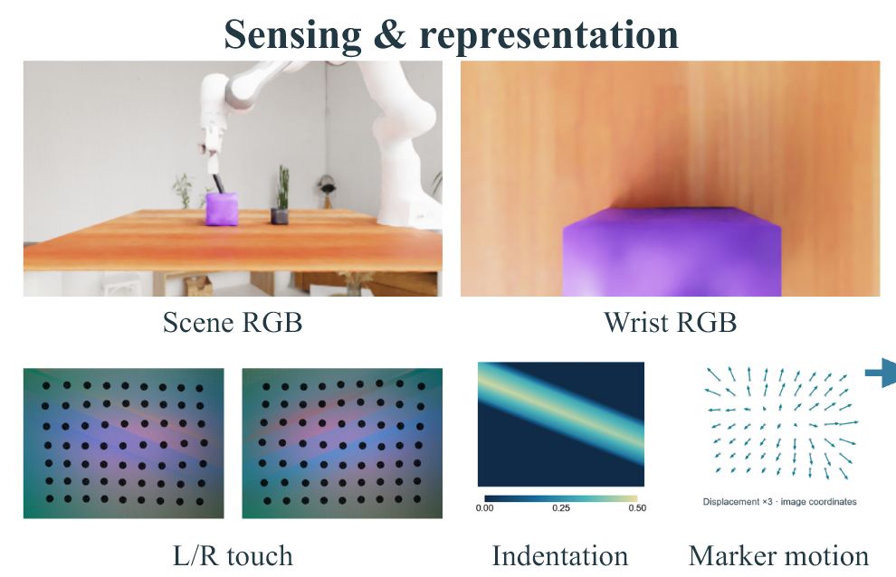
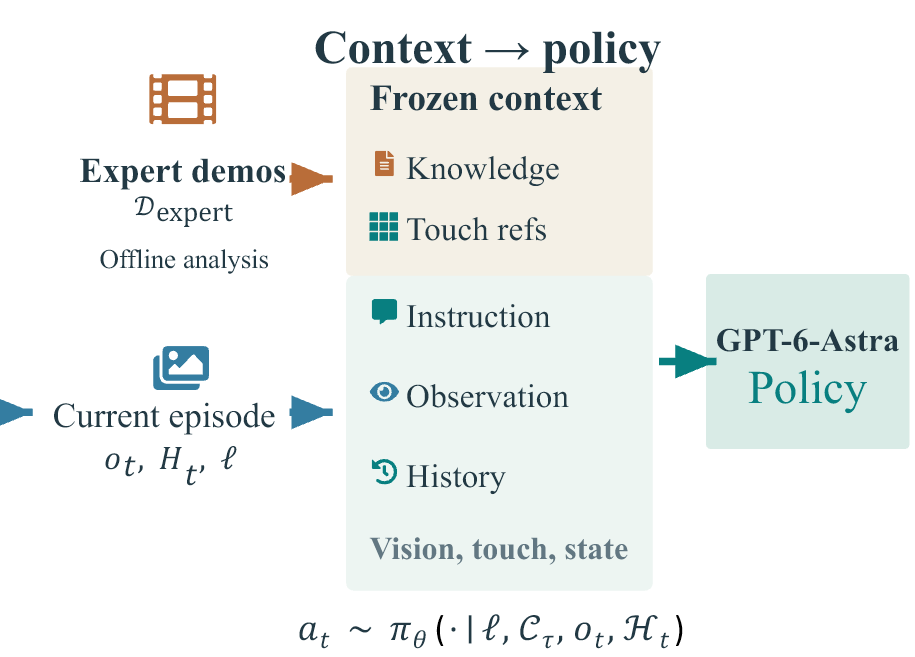
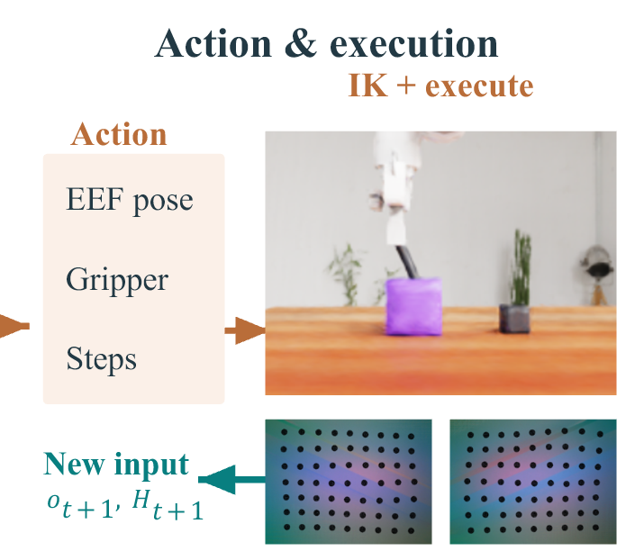

Retries with limited realignment.
In the representative episode described in the manuscript, repeated attempts produce limited changes in tube orientation and lateral end-effector position. Insertion remains incomplete.
Visual–tactile action decisions
GPT-6-Astra Understands Touch and Outperforms Vision–Tactile–Language–Action Models
Paper and code forthcoming.
General-purpose multimodal models have shown promise as direct robot action policies, but their physical understanding remains underexplored. Taking contact-rich manipulation as a typical setting, we investigate the physical understanding of these models and their ability to use this understanding to guide subsequent control actions. Contact-rich manipulation requires interpreting tactile feedback and adjusting actions after obstruction. Existing learned tactile policies acquire these capabilities through specialized pretraining and per-task optimization, with substantial data and training costs. We present GPT-as-Tactile-Policy, which summarizes expert demonstrations into task guidance and tactile references for contact assessment and corrective action. GPT-6-Astra combines this context with multimodal observations and interaction history to generate control commands and adjust actions through contact feedback. Without additional robotics-specific pretraining or per-task policy fine-tuning, our method achieves 93.8% mean success across five UniVTAC tasks. Overall performance is comparable to state-of-the-art policies, with higher success on selected tasks. On Insert Hole, tactile feedback improves success from 31% to 99%. Execution analysis further demonstrates contact-guided probing and correction, supporting manipulation progress through explicit expert experience and online feedback.




We evaluate five of the eight manipulation tasks in the UniVTAC benchmark.
Results follow the manuscript comparison table. Mean is the equal-weight average over the five tasks. The visual baseline π₀.₅ and the tactile-capable baselines use different decision mechanisms and training procedures.
Without additional robotics-specific pretraining or per-task policy fine-tuning, our policy achieves 93.8% mean success, compared with 96.2% for N₀-VTLA and 84.6% for N₀-TWAM. It matches N₀-TWAM on Insert Hole and achieves the highest Lift Can success rate among the compared methods (95%).
Successful simulation recordings for all five evaluated tasks.
One complete episode, showing tactile changes before retraction and continued advancement.
Hollow circles mark reference positions; blue arrows show matched marker displacement at a fixed 3× display gain. The left pair retains the PPT probe reference in its three highlighted windows; the right pair measures change since the preceding decision observation. Outside those windows, both use the decision reference.
The lower trace separately shows RMS relative to the original grasp reference. The recorded public action reason combines vision, tactile feedback, and execution history. These visualizations do not establish a fixed RMS decision threshold or a calibrated contact force.
Tactile ablation on Insert Hole, using the same 100 test configurations.
+68 percentage points with tactile feedback
The tactile-free variant removes tactile observations and tactile references, while retaining vision, proprioception, and the action interface. Each configuration receives a fixed Task Skill matched to its available observations.
Initialization, low-level controllers, and execution budgets are identical across the paired configurations. The comparison evaluates tactile information together with its corresponding task guidance.
In the representative episode described in the manuscript, repeated attempts produce limited changes in tube orientation and lateral end-effector position. Insertion remains incomplete.
The policy changes its probing direction and progressively adjusts orientation and lateral position until insertion succeeds. Contact feedback helps identify ineffective attempts and restore progress.
Broader failure categories and representative recordings will be added with the supporting materials.
Materials forthcomingDecision latency, model calls, execution time, and inference cost have not yet been provided.
Measurements pendingThe verified BibTeX entry will be added when publication details are available.